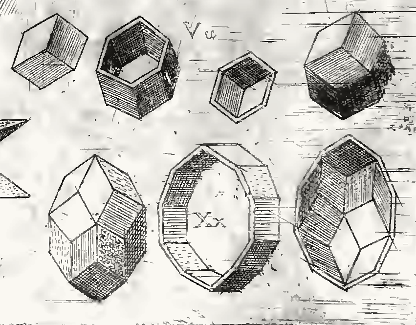
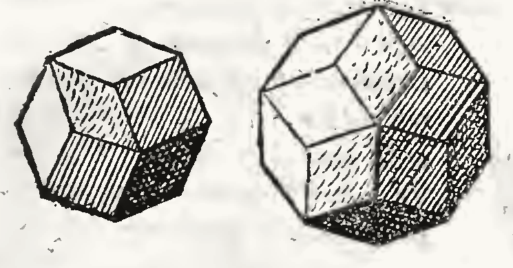

Propositio XXVII: Duo Corpora ex Rhombis¶
XXVII. Propositio.
Congruunt etiam ad solidandas figuras, semiregulares figurae, scilicet Rhombi plani, perfectissimè, idque tantùm bis.
Nam ex duodecim planis Rhombis, certae proportionis Diagoniorum, fit Rhombus solidus, figura cellulae Apiariae, quantum ad latera sex, et fundum triangularem solidum: sex enim Rhombi congruentes sic, ut obtusi obtusis, acuti acutis applicentur, tres habent obtusangulos hiatus, tria etiam paria acutorum extantia suprà, totidemque infrà. Congruunt igitur trium utrinque Rhomborum, obtusis conjunctorum ternae eminentiae, in hiatus, recipiuntque suis hiatibus illorum eminentias.
Sic triginta Rhombi plani, proportionis Diagoniorum alterius, faciunt Rhombum solidum Triacontaëdricum. Quini enim et quini Rhombi, angulis acutis conjuncti, ad effigiandos duos solidos ex oppositis plagis stantes, cùm hient apud obtusos conjunctos quinorum et quinorum Rhomborum obtusis aliis, implent hiatus: denique in utriusque veluti testae medio, Zona ex decem Rhombicis composita circumit, conjungens utramque testam.
Non esse verò plures perfectas Rhomborum congruentias, sic probatur. Sunt enim duo anguli plani Rhombici acuti, duo obtusi; quorum semper acutus unus et unus obtusus faciunt duos rectos: nec plures tribus obtusis congruunt, ne superent quatuor rectos. Quòd si ergò tres solùm acutos conjunxeris, fit ut in Cubo; Hexahedron Rhombicum, cum duobus solùm solidis acutis, longissimè distantibus; caeteri solidi in medio corporis non tantùm distant: non servantur igitur leges definitionis VIII, quae non admittit duos solos angulos in eâdem sphaerâ. Praetereà ex sex solidis obtusis quilibet clauditur à duobus obtusis planis et uno acuto; quae irregularitas rursum est contra definitiones. Ergò non tres tantùm plani acuti coire debent. At neque sex acuti, totidem scilicet Rhomborum, coëunt. Si enim singuli habent quantitatem 2 tertias unius Recti, obtusi habebunt duplam quantitatem, scilicet 4 tertias: et sic tam tres obtusi, quàm sex acuti formabunt 4 Rectos, nec vel illi vel hi formabunt angulum solidum, sed sternent continuam planitiem, ut in figurâ G. Sin autem acuti minores sumantur; obtusi majores erunt, et tres superabunt quatuor rectos. Ergò duae tantùm sunt perfectissimae Rhombicae congruentiae: una, in quâ quatuor acuti anguli Rhombici coëunt in solido; altera, in quâ quinque: quibus tamen associatur Cubus, tanquam Rhomborum omnium principium, quia planum ipsius est laterum aequalium quatuor, ut Rhombicorum.
f. 0081 · p. Tabulae Vv & Xx


